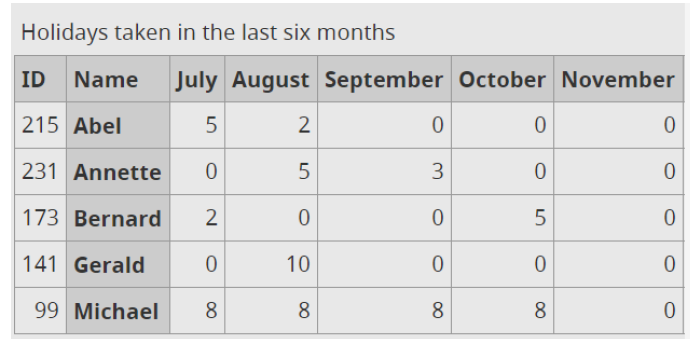

| Anterior | Inicio | Siguiente |
Tablas
Esta tabla tiene la primera fila como cabecera. Indica:
- Número de etiquetas caption:1
- Número de etiquetas tr:4
- Número de etiquetas td:9
- Número de etiquetas th:3
A continuación se realizará la tabla de la siguiente imagen

| Fecha | Evento | Dirección |
|---|---|---|
| 12 Ene | Walrz with Strauss | Ayuntamiento |
| 24 Mar | Beckman. Fihuras del exilio | Museo Nacional Thyssen-Bornemisza |
| 24 Abr | The Wich | Ayntamiento |
A veces las celdas del encabezado abarcan varias columnas y/o filas. Se pueden usar varios elementos y atributos para definir la estructura y las relaciones de las celdas de encabezado y de datos. Por ejemplo, una celda de encabezado que abarca tres columnas debe asociarse con las celdas de datos correspondientes en el grupo de columnas. Esto se puede hacer estableciendo el atributo scope de la celda de encabezado al valor de colgroup. El mismo principio se aplica a las celdas de encabezado que abarcan varias filas. En este caso, están asociados con el uso del grupo de filas de valor en el atributo scope. De la siguiente tabla indica:
- Agrupaciones realizadas con la etiqueta < colgroup span="2"> 3
- Usos que se le da a la etiqueta < col> Indica cuantas col hay. Solo 1, al principio de la tabla.
- Número de etiquetas < tbody> ¿Qué etiquetas quedarían fuera?
- Número de etiquetas < th colspan="2" scope="colgroup"> 3
- Número de etiquetas < th scope="row”> 2
- Número de etiquetas < th scope="col"> 6
A continuación se realizará la tabla de la siguiente imagen

| Mars | Venus | |||
|---|---|---|---|---|
| Produced | Sold | Produced | Sold | |
| Teddy Bears | 50.000 | 30.000 | 100.000 | 80.000 |
| Board Games | 10.000 | 5.000 | 12.000 | 9.000 |
Esta tabla tiene la primera columna como cabecera. Indica:
- Número de etiquetas caption: 1
- Número de etiquetas th: 3
- Número de etiquetas td: 9
A continuación se realizará la tabla de la siguiente imagen
| Date | 12 February | 24 March | 14 April |
|---|---|---|---|
| Event | Waltz with Strauss | The Obelisks | The What |
| Venue | Main Hall | West Wing | Main Hall |
La siguiente tabla tiene dos encabezados: en la primera fila y en la primera columna. Indica:
- Número de etiquetas < th scope="col"> 5
- Número de etiquetas < th scope="row"> 4
- La siguiente tabla tiene una primera columna anterior a la cabecera vertical. Indica: < col>
A continuación se realizará la tabla de la siguiente imagen
| Monday | Tuesday | Wednesday | Thursdat | Friday | |
|---|---|---|---|---|---|
| 9:00-11:00 | Closed | Open | Open | Closed | Closed |
| 11:00-13:00 | Open | Open | Closed | Closed | Closed |
| 13:00-15:00 | Open | Open | Open | Closed | Closed |
| 15:00-17:00 | Closed | Closed | Closed | Open | Open |
La siguiente tabla tiene una primera columna anterior a la cabecera vertical. Indica: • Número de etiquetas < th scope="row”> 6 • Número de etiquetas < th scope="col”> 7
A continuación se realizará la tabla de la siguiente imagen
| ID | Name | July | August | September | Ocotober | November |
|---|---|---|---|---|---|---|
| 215 | Abel | 5 | 2 | 0 | 0 | 0 |
| 231 | Annette | 0 | 5 | 3 | 0 | 0 |
| 173 | Bernard | 2 | 0 | 0 | 5 | 0 |
| 141 | Gerard | 0 | 10 | 0 | 0 | 0 |
| 99 | Michael | 8 | 8 | 8 | 8 | 0 |
En la siguiente tabla los datos (nombre, apellido y ciudad) no se pueden distinguir unos de otros sin saber a qué encabezado corresponde cada uno. El atributo scope con el valor col define la dirección de las celdas de encabezado y las asocia con las celdas de datos correspondientes. El atributo scope también es necesario para tablas más grandes con una fila o columna de encabezado. Indica:
- Numero de etiquetas < th scope="col">< th> 3
A continuación se realizará la tabla de la siguiente imagen
| Last Name | First Name | City |
|---|---|---|
| Phoenix | Imari | Henry |
| Zeki | Rome | Min |
| Apirka | Kelly | Brynn |
Tabla Poster name. Filas agrupadas
Reproduce la siguiente tabla con la primera columna como cabecera dividida. Recuerda que para agrupar cabeceras de filas hay que definir Un grupo de filas está definido por los elementos ,
y . Los elementos y se pueden usar una vez en una tabla. Una tabla puede tener cualquier número de elementos que cada uno define un grupo de filas. Indica:- Número de etiquetas < tbody> 1
- Número de etiquetas < thead> 1
- Número de etiquetas < tfoot> 1
- Agrupaciones realizadas con la etiqueta < colgroup span="2"> 1
- Usos que se le da a la etiqueta < col> indicar que hay columnas
- Número de etiquetas < th colspan="2" scope="colgroup">
- Número de etiquetas< th rowspan="2" scope="rowgroup">
- Número de etiquetas < th scope="row”>3
- Número de etiquetas < th scope="col”> 3

| Poster Name | Color | Sizes available | ||
|---|---|---|---|---|
| Zodiac | Fullcolor | A2 | A3 | A4 |
| Black and white | A1 | A2 | A3 | |
| Sepia | A3 | A4 | A5 | |
| Angels | Black and white | A1 | A3 | A4 |
| Sepia | A2 | A3 | A5 | |
Tabla de ropa
De la siguiente tabla indica:
- Numero de etiquetas td: 14
- Numero de etiquetas th: 5

| Shirt | Size | Stock |
|---|---|---|
| Blue | S | 6 |
| M | 13 | |
| XL | A3 | |
| Red | M | 2 |
| L | 9 | |
| XL | 10 | |
| XXL | 1 |
¿Está correctamente diseñada?¿Has utilizado < br>? ¿Se ha cambiado el tamaño y la alineación de forma correcta? Sí

| fruit | Intructions |
|---|---|
| Apple Orange |
cut in half, remove core remove peel, cut out segments |
| Fruit | Intructions |
| Apple Orange |
cut in half, remove core remove peel, cut out segments |